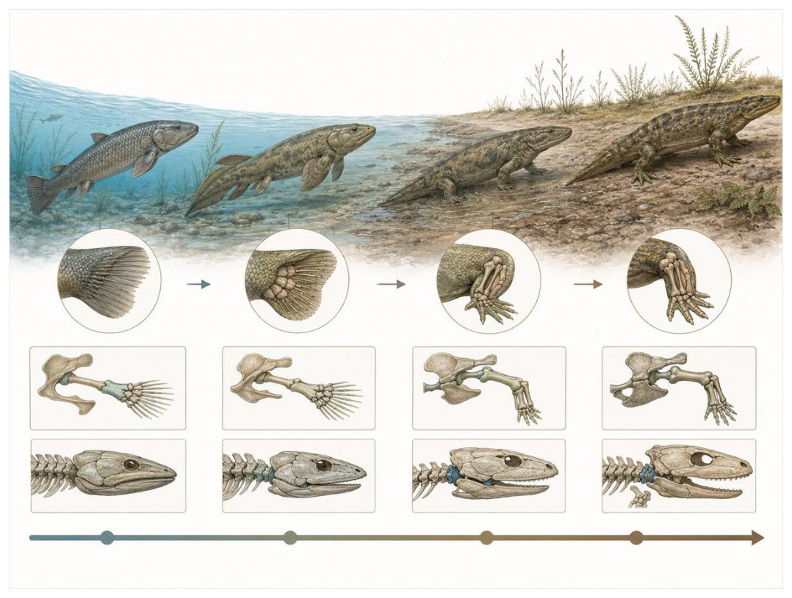
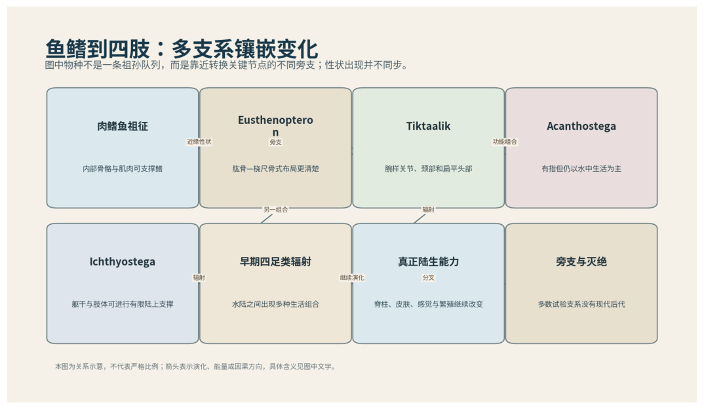

第07篇 · 泥盆纪：鱼类时代与四足动物起源 · 第 22 章
鱼鳍到四肢：四足动物并非沿直线登陆
本篇主题:泥盆纪：鱼类时代与四足动物起源
颌、鳍、森林和浅水环境共同推动脊椎动物的新实验。

本章科学复原配图 （用于呈现结构与生态关系, 不替代化石照片、测量数据与系统发育证据。）
这一章进入晚泥盆世，约3.75亿至3.59亿年前。没有任何生物预知下一时代，所有性状都只能在当时的资源、天敌和繁殖条件下接受筛选。鱼鳍到四肢的转变由许多并存支系共同记录。提塔利克鱼仍有鳍条和鳃，却拥有可活动颈部、坚固肋骨和腕样骨；棘螈已经有明确手指和脚趾，却更适合水中划动；鱼石螈的后肢和躯干更能承重，但尾部仍强烈适应游泳。指趾很可能首先在水中帮助撑开植被、划水和贴底移动，随后才被进一步用于陆上推进。
进入这个时代
生态系统的真实声音不是巨兽咆哮，而是持续的摄食、分解、搬运和繁殖。每一具尸体、每一层落叶和每一次沉积扰动都会重新分配资源。你站在季节性泛滥的三角洲边缘，看见的不是鱼群整齐排队上岸，而是许多身体方案在水陆交界处重叠。某些动物只把头抬出水面呼吸，某些在浅滩上用胸鳍撑起身体，另一些已经用多指肢在水草间划动。陆地只是可被偶尔利用的新空间。
在“鱼鳍到四肢：四足动物并非沿直线登陆”所覆盖的时间里，不能把地理与气候当作固定背景。海陆位置、海平面、河流或植被结构会改变资源可达性，同一性状在不同地区可能得到完全相反的选择结果。
以鱼鳍到四肢：四足动物并非沿直线登陆为例，生态位不是预先摆好的空格，而是生物与环境共同形成的关系。掘穴者改变沉积物，森林固定河岸，礁体构建者制造硬底，巨型植食者改变火与养分。生物占据生态位的同时也在制造新的生态位。 在本章中，这一约束具体落在“浅水和岸边提供昆虫、小型节肢动物与搁浅猎物”这条关系上。
再从晚泥盆世，约3.75亿至3.59亿年前的时间尺度看，环境变化首先作用于生理边界。温度改变酶反应和耗氧量，氧气决定持续活动余量，酸碱度影响骨骼和外壳材料，水分则限制气体交换与胚胎发育。只有跨过这些底层约束，捕食和竞争才有机会决定谁占优势。 它与“腕踝样关节”共同决定了后续变化可以沿哪些路径发生。

图 22-1 鱼鳍到四肢不是直线，而是多支系镶嵌变化。
生态系统如何运转
理解“浅水和岸边提供昆虫、小型节肢动物与搁浅猎物”需要区分个体事件与长期压力。偶然一次捕食只改变个体命运，持续数千代的稳定关系才可能推动牙齿、外壳、感觉器官或生活史发生方向性变化。
围绕“浅水和岸边提供昆虫、小型节肢动物与搁浅猎物”，这种关系没有永恒赢家。收益随密度和环境改变：防御越常见，攻击专门化的价值越高；资源越稀少，维持昂贵结构的代价越大。化石记录中的扩张与衰退，常是这种动态平衡被外部事件打破的结果。 对鱼鳍到四肢：四足动物并非沿直线登陆而言，这一后果还会与“水体干涸使短距离跨越湿地具有收益”相互放大或抵消。
“水体干涸使短距离跨越湿地具有收益”还会改变可利用空间。一个支系若能进入新的水深、植被高度或沉积层，竞争会暂时减弱；随后追随者、捕食者和寄生者又会把新空间变成新的互动网络。
围绕“水体干涸使短距离跨越湿地具有收益”，它的长期后果通常通过幼体和繁殖体现。成年个体即使能抵抗一次危机，只要巢址、配子、幼体食物或成长季节被破坏，种群仍会在数代内下降。 对鱼鳍到四肢：四足动物并非沿直线登陆而言，这一后果还会与“四肢在水中支撑和转向的功能先于稳定步行”相互放大或抵消。
把“四肢在水中支撑和转向的功能先于稳定步行”放进食物网，可以看到它不是孤立行为。它会影响种群密度、栖息地使用和尸体进入分解链的速度，并把后果传给并未直接参与互动的物种。
围绕“四肢在水中支撑和转向的功能先于稳定步行”，还要考虑空间异质性。一项在浅海、河谷或林冠有效的策略，移到深水、干旱内陆或开阔地便可能失去优势。因此同一支系常出现区域性扩张，而不是全球同步取代。 对鱼鳍到四肢：四足动物并非沿直线登陆而言，这一后果还会与“浅水和岸边提供昆虫、小型节肢动物与搁浅猎物”相互放大或抵消。
关键演化创新
在“鱼鳍到四肢：四足动物并非沿直线登陆”中，围绕“腕踝样关节”，这一结构的历史应按性状拆开。支撑、感觉、供能和控制往往不是同时成熟，化石会显示镶嵌状态：某一部分已接近后来的形态，其他部分仍保留祖征。它首先需要在晚泥盆世，约3.75亿至3.59亿年前的生态条件下产生可测量收益。
就“腕踝样关节”而言，化石能较可靠地记录硬组织形态，却很少直接保留基因调控与短时行为。因此结构出现通常可信，最初用途和选择路径则应按证据标为主流解释或合理推测。 本章把它与“真正的指趾”并列，是为了显示复杂性状往往依赖多部分协同。
在“鱼鳍到四肢：四足动物并非沿直线登陆”中，围绕“真正的指趾”，“真正的指趾”是本章的重要演化创新。创新并不等于某一代突然长出完整器官，它通常由旧结构的尺寸、连接、材料和表达时序逐步变化，并在每个中间阶段承担可用功能。它首先需要在晚泥盆世，约3.75亿至3.59亿年前的生态条件下产生可测量收益。
就“真正的指趾”而言，其宏观影响往往滞后于结构起源。一个创新可以先在小型、稀少支系中存在数百万年，直到环境变化或竞争者灭绝后才迅速扩张；“出现”和“成为主导”是两个不同事件。 本章把它与“颈部、脊柱与骨盆承重整合”并列，是为了显示复杂性状往往依赖多部分协同。
在“鱼鳍到四肢：四足动物并非沿直线登陆”中，围绕“颈部、脊柱与骨盆承重整合”，这一结构的历史应按性状拆开。支撑、感觉、供能和控制往往不是同时成熟，化石会显示镶嵌状态：某一部分已接近后来的形态，其他部分仍保留祖征。 它首先需要在晚泥盆世，约3.75亿至3.59亿年前的生态条件下产生可测量收益。
就“颈部、脊柱与骨盆承重整合”而言，这也提醒我们不要寻找单一关键基因。复杂性状由多个组织和调控网络协调，改变任何一环都可能产生不同结果，演化路径因此呈树状而非直线。 本章把它与“腕踝样关节”并列，是为了显示复杂性状往往依赖多部分协同。
生命群像：把物种放回生态网络
提塔利克鱼（Tiktaalik roseae）
在这一章的生命群像里，提塔利克鱼（Tiktaalik roseae）不能只当作图鉴名称。它出现于晚泥盆世，约3.75亿年前，体型大约约1至2.5米，主要生活方式是浅水河道中的伏击型肉鳍鱼；扁平头、可活动颈部、粗壮肋骨和腕样鳍骨构成水生与四足型特征的镶嵌则说明身体怎样围绕这一生活方式进行组合。
对提塔利克鱼而言，成年体型往往主导复原，但幼体可能使用完全不同的食物和栖息地。若成长阶段跨越多个生态位，种群就同时依赖多套环境；其中任一环节中断都可能导致长期衰退。化石骨床的年龄结构因此比单具最大标本更能说明生态。 这使“扁平头、可活动颈部、粗壮肋骨和腕样鳍骨构成水生与四足型特征的镶嵌”不能脱离其浅水河道中的伏击型肉鳍鱼角色来理解。
科学家并未直接看见它生活，依据是加拿大北极地层年代和完整骨架支持其接近四足动物干群，鳍条仍证明它不是陆生四足动物。现代类比可以帮助提出可检验模型，却不能取代化石；越具体的短时行为，越需要痕迹、内容物或重复病理等直接线索。
由提塔利克鱼这个案例看，这个案例还提醒我们，亲缘和生态角色是两件事。近亲可以因资源分化而外形迥异，远亲也能因相似压力而趋同。把它放在演化树和食物网两个坐标中，才不会误写成线性进步。它在晚泥盆世，约3.75亿年前留下的记录，因此同时是第22章所讨论的形态史和生态史的一部分。
希望螈（Elpistostege watsoni）
从外形看，希望螈（Elpistostege watsoni）最容易被记住的是胸鳍内部保存多枚指样远端骨，显示指趾样结构可能在仍具鳍条的动物中出现。它生活在晚泥盆世，约3.80亿年前，大小约约1.5米，承担浅水肉鳍鱼这一生态功能。把年代、体型和功能放在一起，才能避免把奇特形态当成无意义装饰。
对希望螈而言，这种生活方式还会反向塑造环境。摄食改变植物或猎物结构，足迹和掘穴改变沉积，尸体和排泄物把营养集中到局部。生态位不是它进入的固定房间，而是它与其他生物共同建造并持续修改的关系网络。 这使“胸鳍内部保存多枚指样远端骨，显示指趾样结构可能在仍具鳍条的动物中出现”不能脱离其浅水肉鳍鱼角色来理解。
证据核心是魁北克完整标本经CT成像重建，指样骨是否具与四足动物手指相同功能需谨慎。化石记录更擅长回答“结构是什么”，较难回答“每天怎样行动”。足迹、胃内容物、咬痕或胚胎若存在，会显著缩小推测范围；若只有零散骨骼，行为叙述就必须更克制。
由希望螈这个案例看，它所代表的身体方案后来可能消失，也可能被远亲以不同材料重新发明。生命史因此既有可重复的功能解，也有不可复制的谱系路径。两者结合，才解释现代生物为何既熟悉又偶然。它在晚泥盆世，约3.80亿年前留下的记录，因此同时是第22章所讨论的形态史和生态史的一部分。
棘螈（Acanthostega gunnari）
棘螈（Acanthostega gunnari）是晚泥盆世，约3.65亿年前的一名真实生态成员，而不是通往后代的抽象过渡。它约有约60厘米，以以水生为主的早期四足动物的方式获取资源；每肢八指、尾鳍和较弱腕踝显示指趾最初并不等于陆地步行反映了其祖先历史与局部选择压力共同留下的结果。
对棘螈而言，相似环境可能让远亲出现相近轮廓，但内部结构会保留祖先限制。比较它与现代类比时，应只借用可检验的功能，不把现代动物的行为、社会制度或代谢水平整套复制到古生物身上。 这使“每肢八指、尾鳍和较弱腕踝显示指趾最初并不等于陆地步行”不能脱离其以水生为主的早期四足动物角色来理解。
判断它的生活方式时，研究者首先使用格陵兰多具骨架和关节结构支持水生生活，具体上岸能力仍可有限存在。随后会检验替代解释：同样的牙是否也能处理其他食物，同样的骨骼比例是否由年龄造成，同一骨层是否来自群体生活还是灾难性聚集。排除过程比贴标签更重要。
由棘螈这个案例看，过去的复原常受完整现代动物模板影响，新材料则迫使研究者接受更陌生的身体比例或生活方式。最稳妥的表达是保留估计区间，并明确哪些软组织、颜色和社会行为仍属合理推测。 它在晚泥盆世，约3.65亿年前留下的记录，因此同时是第22章所讨论的形态史和生态史的一部分。
鱼石螈（Ichthyostega）
若把镜头从时代拉近到个体，鱼石螈（Ichthyostega）会首先进入视野。它生活于晚泥盆世，约3.65亿年前，体型约约1至1.5米。作为水陆交界的强壮四足动物，它依靠厚肋骨、强后肢和特殊脊柱能抬起身体，但运动方式不同于现代蝾螈与环境和其他生物发生关系。
对鱼石螈而言，它既可能是捕食者、植食者或工程者，也同时是其他生物的猎物、竞争者和分解资源。一次取食只是一瞬，长期生态影响来自成千上万个体反复搬运营养、改变植被或扰动沉积物。体型越大，这种工程效应通常越明显，但恢复速度也常越慢。 这使“厚肋骨、强后肢和特殊脊柱能抬起身体，但运动方式不同于现代蝾螈”不能脱离其水陆交界的强壮四足动物角色来理解。
关于它的直接依据是：三维关节复原显示其可能以交替或类似撑杆方式移动，传统四脚爬行复原过于简单。研究者还必须确认骨骼是否属于同一个体、是否被水流搬运、压扁是否改变比例，以及不同大小是否只是成长阶段。只有解剖、地层和功能证据相互一致，复原才可上调为高可信。
由鱼石螈这个案例看，它在生命史中的价值不在于离现代形态还有多远，而在于证明这一身体组合曾真实可行。即使没有直系后代，支系也可能在当时持续繁盛，并通过捕食、植食或栖息地工程改变其他生命的选择环境。 它在晚泥盆世，约3.65亿年前留下的记录，因此同时是第22章所讨论的形态史和生态史的一部分。
图拉螈（Tulerpeton curtum）
图拉螈（Tulerpeton curtum）存在于晚泥盆世，约3.65亿年前。现有材料显示其大小约约50至70厘米，生态位置接近可能更适应浅海或半咸水的四足动物。六指肢和较强肩带显示早期四足动物指趾数量尚未固定为五让它成为理解本章主题的合适案例，但不意味着同一类群所有成员都采用相同策略。
对图拉螈而言，成年体型往往主导复原，但幼体可能使用完全不同的食物和栖息地。若成长阶段跨越多个生态位，种群就同时依赖多套环境；其中任一环节中断都可能导致长期衰退。化石骨床的年龄结构因此比单具最大标本更能说明生态。这使“六指肢和较强肩带显示早期四足动物指趾数量尚未固定为五”不能脱离其可能更适应浅海或半咸水的四足动物角色来理解。
现有认识建立在俄罗斯标本保存肢带，环境解释提示早期四足动物并非只在淡水演化之上。古生物学的可信度不是来自一件戏剧化标本，而是来自多件标本、多个地点和不同方法得到相容结果。新发现若改变比例或分类，并非此前研究毫无价值，而是证据边界被重新画清。
由图拉螈这个案例看，从生态尺度看，它与本章其他成员共同维持一张网络。任何“最强”排名都会遗漏资源供应、幼体死亡、疾病和气候脉冲；真正决定长期成功的是种群能否在波动中不断完成繁殖。 它在晚泥盆世，约3.65亿年前留下的记录，因此同时是第22章所讨论的形态史和生态史的一部分。
因果链：环境、生态与性状
从时间顺序看，“腕踝样关节”的最早记录不等于它立即改写生态系统。结构可能先以小幅变异出现在稀少支系中，经历很长的试验期，直到“浅水和岸边提供昆虫、小型节肢动物与搁浅猎物”所代表的资源条件或竞争格局改变，才出现可见的辐射。反过来，一个支系在化石记录中突然繁盛，也不证明关键结构刚刚产生；保存窗口打开、地理扩散或生态位释放都能造成类似图景。因此讨论晚泥盆世，约3.75亿至3.59亿年前的创新时，本章把“首次出现”“功能完善”“多样化”和“成为生态主导”分成四个问题，避免用一个日期替代整段历史。
在晚泥盆世，约3.75亿至3.59亿年前，身体不是若干部件的简单相加。“腕踝样关节”只有与“颈部、脊柱与骨盆承重整合”在供能、控制和发育上兼容，才可能稳定遗传；局部性能提高若超过呼吸、循环或支撑能力，整体反而失效。棘螈的每肢八指、尾鳍和较弱腕踝显示指趾最初并不等于陆地步行因此应放进完整身体比例中解释，而不是把某一器官单独夸大。生物力学模型可以估算受力和运动范围，组织学能限制生长速度，近缘比较能提示同源关系；三者相互校验，才有可能从静态化石走向一个能够活着完成日常活动的动物或植物。
种群层面的成功还要考虑波动，而不仅是平均状态。在资源丰富年份，“真正的指趾”带来的高性能可能迅速增加个体数；在低谷年份，维持该结构的成本又会放大死亡。若希望螈拥有较广食谱或可迁移，便可能跨过低谷；若其胸鳍内部保存多枚指样远端骨，显示指趾样结构可能在仍具鳍条的动物中出现高度依赖单一环境，恢复就更困难。化石群落中的丰度峰值、体型变化和地理收缩能为这种“繁荣—压力—恢复”循环提供线索，但必须与采样偏差区分。对晚泥盆世，约3.75亿至3.59亿年前的任何稳态描述，都只是长期波动中被岩层保存的一小段。
本章的因果链最终落在繁殖上。“水体干涸使短距离跨越湿地具有收益”改变个体获得资源和避开风险的方式，“腕踝样关节”改变身体能做什么，但只有这些差异持续影响配子、胚胎、幼体和成体留下后代的概率，演化频率才会跨世代变化。提塔利克鱼和希望螈的化石常让人关注尺寸或武器，然而巢、蛋、芽孢、孢粉、幼体壳和成长线往往更接近选择真正发生的位置。理解鱼鳍到四肢：四足动物并非沿直线登陆，因此要把最壮观的成年结构重新接回完整生活史。
把“腕踝样关节”拆成成本与收益，可以避免把演化创新写成无条件升级。它可能扩大摄食、运动或繁殖的边界，却要付出组织材料、发育协调和日常维持的代价；“真正的指趾”又会改变这笔账在不同生命阶段的分配。对提塔利克鱼而言，扁平头、可活动颈部、粗壮肋骨和腕样鳍骨构成水生与四足型特征的镶嵌在成年阶段或许十分醒目，但种群能否延续仍取决于幼体是否能找到食物、是否有安全的生长场所以及环境波动后是否保留繁殖者。化石往往偏爱成年硬组织，因此书写晚泥盆世，约3.75亿至3.59亿年前时必须主动补上这些不易保存却决定长期命运的环节。
时代横截面：个体、种群与证据
证据强度也应逐句区分。鳍骨与四肢骨同源序列若直接记录形态或行为痕迹，可把某些可能性排除；足迹化石显示身体化石之前已存在四足步态若来自模型或现代类比，则通常提供范围而非唯一答案。对棘螈的每肢八指、尾鳍和较弱腕踝显示指趾最初并不等于陆地步行，我们也许能高可信地描述结构，却只能以主流解释讨论功能，以合理推测讨论日常行为。把层级写出来不会削弱故事，反而让读者知道未来新发现最可能改动哪一部分。
把结构看作模块，可以解释为什么过渡类型常显得“新旧并存”。提塔利克鱼的扁平头、可活动颈部、粗壮肋骨和腕样鳍骨构成水生与四足型特征的镶嵌可能已经接近后来状态，而呼吸、繁殖或运动的其他部分仍保留祖征；希望螈可能采用另一种组合达到相似功能。演化不要求所有部件同步改变，只要求每个阶段的完整个体能够生活和繁殖。正因如此，真实谱系会产生旁支、回退和多次独立试验，而不是教科书式直梯。
再把棘螈加入横截面，群落关系会从两者比较变成网络。它作为以水生为主的早期四足动物，通过每肢八指、尾鳍和较弱腕踝显示指趾最初并不等于陆地步行连接资源与其他消费者；其数量变化可能同时影响提塔利克鱼和希望螈，甚至改变分解链和营养循环。这样的间接效应很少能由一具骨架直接证明，却可以从物种共现、丰度、痕迹化石和环境指标中受到约束。鱼鳍到四肢：四足动物并非沿直线登陆的生态复原因此需要群落数据，而不只是著名标本的精细解剖。
地理同样会拆散看似整齐的时代标签。晚泥盆世，约3.75亿至3.59亿年前并不是全球同时拥有同一种气候与群落：海盆深浅、纬度、山脉、河流和大陆隔离会让提塔利克鱼、希望螈与棘螈的分布错开。一个支系可能在某地区衰退、在另一地区成为避难所；后来扩散又会造成化石记录中的“重新出现”。因此本章的代表物种用于说明机制，而不意味着它们都在同一地点同一时刻相遇。
“谁取代了谁”常把复杂过程压成单线叙事。在鱼鳍到四肢：四足动物并非沿直线登陆中，即使希望螈在某层位后减少、棘螈随后增加，也可能是二者分别响应气候或栖息地，而不是直接竞争导致淘汰。需要检查时间误差、地理重叠和资源相似度；只有三者都支持，替代关系才更可信。更多时候，生态系统通过功能重新组合过渡，旧支系与新支系会长期并存。
科学家为什么这样判断
“鳍骨与四肢骨同源序列”还需要与年代学绑定。只有事件先后关系可靠，才能讨论因果；若环境变化和生物响应的误差范围大量重叠，就应表述为相关或可能机制，而不是宣布已经证明。
“足迹化石显示身体化石之前已存在四足步态”最有价值的地方，是它能排除某些流行复原。关节不允许的姿势、承重无法支持的速度、与沉积环境冲突的生活方式，都可以被证据淘汰；剩余模型仍可能不止一个。
“关节面、肋骨和骨盆连接用于生物力学测试”提供的是一类约束而非完整录像。它可能精确记录某一瞬间，却未必代表全年或整个物种；也可能反映长期平均，却无法指出单次行为。把不同时间尺度的证据组合，才能重建生态过程。
在“鱼鳍到四肢：四足动物并非沿直线登陆”这一问题上，把上述方法合在一起，研究者才能从残缺材料走向受约束的复原。任何一条证据都可能受到成岩、污染、样本量或现代类比的限制；结论越具体，越需要多条独立证据指向同一方向，并与晚泥盆世，约3.75亿至3.59亿年前的地层背景相容。
过去的图景与今天的证据
‘Tiktaalik是从鱼到人的缺失环节’并不准确。它是接近四足动物的一条旁支，展示若干中间状态；更早的波兰足迹暗示具指趾动物出现时间可能早于部分著名身体化石。化石记录仍有空隙，但多个特征的分阶段出现已经非常清楚。
围绕“鱼鳍到四肢：四足动物并非沿直线登陆”，旧复原并不总是彻底错误。它可能正确抓住亲缘或基本功能，却在姿势、比例和生态上被新标本修订。比较“过去认为”和“现在更支持”，能看见证据如何逐层替换想象。
对晚泥盆世，约3.75亿至3.59亿年前的材料而言，这里的争论并非一方相信科学、另一方拒绝科学，而是不同材料对模型的约束力度不同。旧结论可能建立在少量标本或错误现代类比上，新技术增加性状后会改变最合理解释。修正是研究正常运行的结果。
跨尺度观察
灭绝选择性：危机不会随机删除名单。分布狭窄、食性单一、体型大、成熟慢或依赖特定栖息地的支系往往风险更高，但每次事件的杀伤机制不同，规律只能作为概率而非绝对法则。 在“鱼鳍到四肢：四足动物并非沿直线登陆”中，这一尺度具体连接了“浅水和岸边提供昆虫、小型节肢动物与搁浅猎物”与“腕踝样关节”，因而不能只从单个成年标本判断。
恢复不是复原：大灭绝后的多样性回升并不意味着旧生态返回。幸存者会以新组合接管功能，某些空缺可能数百万年无人填补，另一些由远亲迅速占据。恢复速度应分别看物种数、身体大小和食物网复杂度。 在“鱼鳍到四肢：四足动物并非沿直线登陆”中，这一尺度具体连接了“水体干涸使短距离跨越湿地具有收益”与“真正的指趾”，因而不能只从单个成年标本判断。
空间镶嵌：同一地质时期包含多个大陆、纬度和海盆。地区之间可因山脉、海峡和洋流形成不同群落，局部化石库不能代表全球平均。比较多个地点能区分真正的全球事件与区域替换。 在“鱼鳍到四肢：四足动物并非沿直线登陆”中，这一尺度具体连接了“四肢在水中支撑和转向的功能先于稳定步行”与“颈部、脊柱与骨盆承重整合”，因而不能只从单个成年标本判断。
通向下一个时代
从本章走向下一阶段时，需要保留的不是一串物种名，而是一个因果链：环境改变可用能量与栖息地，生态关系筛选性状，性状又反过来改造环境。四足动物进入陆地后并未立刻摆脱水。繁殖、幼体发育和皮肤失水仍把许多早期支系束缚在湿地，直到石炭纪的森林和羊膜卵改变规则。
本章精选来源
- [R37] Clack, J. A. Gaining Ground: The Origin and Evolution of Tetrapods, 2nd ed. Indiana University Press, 2012.
- [R38] Daeschler, E. B., Shubin, N. H. & Jenkins, F. A. A Devonian tetrapod-like fish and the evolution of the tetrapod body plan. Nature 440, 757-763 (2006).
- [R43] Sallan, L. C. & Coates, M. I. End-Devonian extinction and a bottleneck in the early evolution of modern jawed vertebrates. Proceedings of the National Academy of Sciences 107, 10131-10135 (2010).
- [R44] Stein, W. E. et al. Giant cladoxylopsid trees resolve the enigma of the Earth’s earliest forest stumps. Nature 446, 904-907 (2007).
- [R45] Berry, C. M. et al. The earliest known forests recognized in the Middle Devonian of New York. Current Biology 30, R111-R112 (2020).